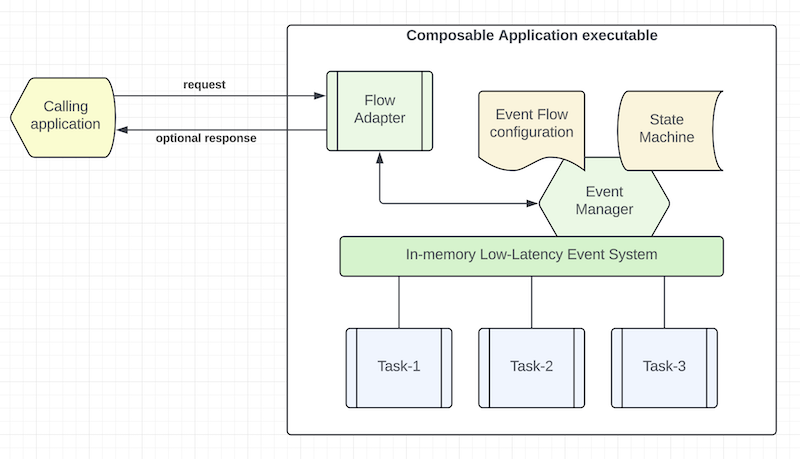
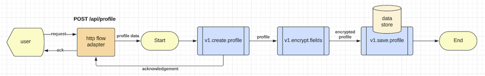
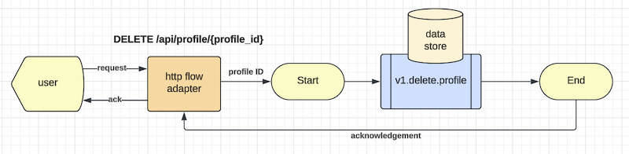

Introduction
Mercury Composable is a software development toolkit for writing composable applications.
Composable application means that an application is assembled from modular software components or functions that are self-contained and pluggable. You can mix-n-match functions to form new applications. You can retire outdated functions without adverse side effect to a production system. Multiple versions of a function can exist, and you can decide how to route user requests to different versions of a function. Applications would be easier to design, develop, maintain, deploy, and scale.
Composable application architecture
Figure 1 - Composable application architecture

As shown in Figure 1, a composable application contains the following:
- Flow adapters: Each flow adapter listens to requests for onwards delivery to an event manager.
- Event Manager: it sends events to a set of user functions for them to work together as an application.
- User functions: these are self-contained functions with clear input and output that are immutable.
HTTP flow adapter
A non-blocking HTTP flow adapter is built-in. For other external interface types, you can implement your own flow adapters. e.g. Adapters for MQ, Kafka, Serverless, File based staging area, etc.
The standard HTTP flow adapter leverages the underlying REST automation system to serve user facing REST API endpoints. For example, a hypothetical "get profile" endpoint is created like this in the "rest.yaml" configuration file:
- service: "http.flow.adapter"
methods: ['GET']
url: "/api/profile/{profile_id}"
flow: 'get-profile'
timeout: 10s
cors: cors_1
headers: header_1
tracing: true
In this REST configuration entry, the system creates a REST API endpoint for "GET /api/profile/{profile_id}". When a request arrives at this endpoint, the HTTP request will be converted to an incoming event by the flow adapter that routes the event to the "event manager" to execute a new instance of the "get-profile" flow.
Flow configuration example
The event manager is driven by configuration instead of code. A hypothetical "get profile" flow is defined in a YAML file like this:
flow:
id: 'get-profile'
description: 'Get a user profile using profile ID'
ttl: 10s
exception: 'v1.hello.exception'
first.task: 'v1.get.profile'
tasks:
- input:
- 'input.path_parameter.profile_id -> header.profile_id'
process: 'v1.get.profile'
output:
- 'result -> model.profile'
description: 'Retrieve user profile from database using profile_id'
execution: sequential
next:
- 'v1.decrypt.fields'
- input:
- 'model.profile -> dataset'
- 'text(telephone, address) -> protected_fields'
process: 'v1.decrypt.fields'
output:
- 'text(application/json) -> output.header.content-type'
- 'result -> output.body'
description: 'Decrypt fields'
execution: end
- input:
- 'error.code -> status'
- 'error.message -> message'
- 'error.stack -> stack'
process: 'v1.hello.exception'
output:
- 'result.status -> output.status'
- 'result -> output.body'
description: 'Just a demo exception handler'
execution: end
Note that the flow configuration is referring user functions by their "route" names. It is because all user functions are self-contained with clearly defined input and output and the event manager would set their inputs and collect their outputs accordingly. Note that you can map selected key-values or the whole event as a business object and this decoupling promotes highly reusable user functional software.
The event manager will create a "state machine" to manage each transaction flow because all user functions are stateless. The "state machine" is referenced using the namespace "model".
Assigning a route name to a user function
You can assign a route name to a Composite class using the preLoad annotation like this:
export class GetProfile implements Composable {
@preload('v1.get.profile', 10)
initialize(): Composable {
return this;
}
async handleEvent(evt: EventEnvelope) {
// your business logic here
return result;
}
}
Inside the "handleEvent" method, you can write regular TypeScript code using your preferred coding style and framework. You can define input/output as key-values (i.e. JSON objects).
Building the Mercury libraries from source
Assuming you clone the repository into the "sandbox" directory, you may build the libraries like this.
cd sandbox/mercury-nodejs
npm install
npm run build
The compiled libraries will be saved to the distribution folder (dist). For production, you may publish
the distribution into your enterprise artifactory.
Composable application example
Let's take a test drive of a composable application example in this repo: composable-example
To build the sample app, please clone example repo and build the application like this:
cd sandbox/mercury-composable-examples
cd node/composable-example
npm install
npm run build
npm run test
When you build the composable example application, the first thing that you may notice is that the build script will scan your source code and libraries. This is similar to the class scanner feature in other languages. This feature is essential in composable application design because it decouples composable classes from each others so that they can be written in a self-contained manner. Your application does not need to import the classes. Instead, the class scanner will create a "Composable class loader" during the build phase. The class loader will then load the available composable classes and register them into the event loop.
Another important feature that you would find is that a composable application has a "resources" folder in the "src" and "test" sections to hold application configuration files including event flow YAML files. It supports hierarchy of configuration such that the system will search for configuration files in the libraries if your application does not provide a configuration file to override a default configuration file in the library. For example, your unit tests would use a configuration file in the "src/resources" folder if it is not in the "tests/resources" folder.
For details, please refer to the Configuration management section in Appendix-I
Your build log may look like this:
INFO Scanning ./node_modules/mercury-composable/dist (scanPackage:preloader.js:20)
INFO Class NoOp (scanLibrary:preloader.js:78)
INFO Scanning ./src (main:preloader.js:200)
INFO Class DemoAuth (scanSource:preloader.js:102)
INFO Class DemoHealthCheck (scanSource:preloader.js:102)
INFO Class HelloWorldService (scanSource:preloader.js:102)
INFO Class CreateProfile (scanSource:preloader.js:102)
INFO Class DecryptFields (scanSource:preloader.js:102)
INFO Class DeleteProfile (scanSource:preloader.js:102)
INFO Class EncryptFields (scanSource:preloader.js:102)
INFO Class GetProfile (scanSource:preloader.js:102)
INFO Class HelloException (scanSource:preloader.js:102)
INFO Class SaveProfile (scanSource:preloader.js:102)
INFO Composable class loader (/preload/preload.ts) generated (generatePreLoader:preloader.js:176)
The build script will compile your TypeScript source files into Javascript and then run the "preloader.js" script to scan for your composable functions. Optionally, you can ask it to scan for composable libraries using the "web.component.scan" parameter. In the above example, it scan for the package "mercury-composable" in the "node_modules" folder and find the NoOp function.
The first step in designing a composable application is to draw an event flow diagram. This is similar to a data flow diagram where the arrows are labeled with the event objects. Note that event flow diagram is not a flow chart and thus decision box is not required. If a user function (also known as a "task") contains decision logic, you can draw two or more output from the task to connect to the next set of functions. For example, label the arrows as true, false or a number starting from 1.
The composable-example application is a hypothetical "profile management system" where you can create a profile, browse or delete it.
Figure 2 - Create a profile

Figure 2 illustrates an event flow to create a profile. Note that the "create profile" can send acknowledgement to the user first. It then encrypts and saves the profile into a data store.
Figure 3 - Retrieve a profile

Figure 3 demonstrates the case to retrieve a profile. It retrieves an encrypted profile and then passes it to the decryption decryption function to return "clear text" of the profile to the user.
Figure 4 - Delete a profile

Figure 4 shows the case to delete a profile. It deletes a profile using the given profile ID and sends an acknowledgement to the user.
The REST endpoints for the three use cases are shown in the "rest.yaml" configuration file under the "main/resources" in the example subproject.
Extract of some configuration parameters in "application.yml" is shown below:
application.name: 'composable-example'
web.component.scan: 'mercury-composable'
server.port: 8086
rest.automation: true
yaml.rest.automation: classpath:/rest.yaml
yaml.flow.automation: classpath:/flows.yaml
The flow configuration files are shown in the "src/resources/flows" folder where you will find the flow configuration files for the three event flows, namely get-profile.yml, delete-profile.yml and create-profile.yml.
Starting the application
To run the composable-example application, you can do this:
node dist/composable-example.js
When the application starts, you will see extract of the application log like this:
INFO Event system started - 15cda88cb4bf4f658357bb6007869296 (platform.js:503)
INFO PRIVATE distributed.tracing registered (platform.js:259)
INFO PRIVATE async.http.request registered with 200 instances (platform.js:262)
INFO PRIVATE no.op registered with 10 instances (platform.js:262)
INFO PRIVATE v1.api.auth registered (platform.js:259)
INFO PRIVATE demo.health registered (platform.js:259)
INFO PUBLIC hello.world registered with 10 instances (platform.js:262)
INFO PRIVATE v1.create.profile registered with 10 instances (platform.js:262)
INFO PRIVATE v1.decrypt.fields registered with 10 instances (platform.js:262)
INFO PRIVATE v1.delete.profile registered with 10 instances (platform.js:262)
INFO PRIVATE v1.encrypt.fields registered with 10 instances (platform.js:262)
INFO PRIVATE v1.get.profile registered with 10 instances (platform.js:262)
INFO PRIVATE v1.hello.exception registered with 10 instances (platform.js:262)
INFO PRIVATE v1.save.profile registered with 10 instances (platform.js:262)
INFO Loading event scripts from classpath:/flows.yaml (CompileFlows.start:compile-flows.js:72)
INFO Parsing create-profile.yml (CompileFlows.createFlow:compile-flows.js:108)
INFO Parsing delete-profile.yml (CompileFlows.createFlow:compile-flows.js:108)
INFO Parsing get-profile.yml (CompileFlows.createFlow:compile-flows.js:108)
INFO Loaded create-profile (CompileFlows.start:compile-flows.js:102)
INFO Loaded delete-profile (CompileFlows.start:compile-flows.js:102)
INFO Loaded get-profile (CompileFlows.start:compile-flows.js:102)
INFO Event scripts deployed: 3 (CompileFlows.start:compile-flows.js:104)
INFO Loading EventScriptManager as event.script.manager (FunctionRegistry.save:function-registry.js:33)
INFO PRIVATE event.script.manager registered (platform.js:259)
INFO Loading TaskExecutor as task.executor (FunctionRegistry.save:function-registry.js:33)
INFO PRIVATE task.executor registered (platform.js:259)
INFO Loading HttpToFlow as http.flow.adapter (FunctionRegistry.save:function-registry.js:33)
INFO PRIVATE http.flow.adapter registered with 200 instances (platform.js:262)
INFO To stop application, press Control-C (EventSystem.runForever:platform.js:589)
INFO Composable application started (main:composable-example.js:27)
INFO REST automation service started on port 8086 (rest-automation.js:443)
It shows that the 3 flow configuration files are compiled as objects to optimize performance. The user functions are loaded into the event system and the REST endpoints are rendered from the "rest.yaml" file.
Testing the application
You can create a test user profile with this python code. Alternatively, you can also use PostMan or other means to do this.
>>> import requests, json
>>> d = { 'id': 100, 'name': 'Hello World', 'address': '100 World Blvd', 'telephone': '123-456-7890' }
>>> h = { 'content-type': 'application/json', 'accept': 'application/json' }
>>> r = requests.post('http://127.0.0.1:8100/api/profile', data=json.dumps(d), headers=h)
>>> print(r.status_code)
201
>>> print(r.text)
{
"profile": {
"address": "***",
"name": "Hello World",
"telephone": "***",
"id": 100
},
"type": "CREATE",
"secure": [
"address",
"telephone"
]
}
To verify that the user profile has been created, you can point your browser to
http://127.0.0.1:8100/api/profile/100
Your browser will return the following:
{
"address": "100 World Blvd",
"name": "Hello World",
"telephone": "123-456-7890",
"id": 100
}
You have successfully tested the two REST endpoints. Tracing information in the application log may look like this:
DistributedTrace:76 - trace={path=POST /api/profile, service=http.flow.adapter, success=true,
origin=202406249aea0a481d46401d8379c8896a6698a2, start=2024-06-24T22:41:23.524Z,
exec_time=0.284, from=http.request, id=f6a6ae62340e43afb0a6f30445166e08}
DistributedTrace:76 - trace={path=POST /api/profile, service=event.script.manager, success=true,
origin=202406249aea0a481d46401d8379c8896a6698a2, start=2024-06-24T22:41:23.525Z,
exec_time=0.57, from=http.flow.adapter, id=f6a6ae62340e43afb0a6f30445166e08}
DistributedTrace:76 - trace={path=POST /api/profile, service=v1.create.profile, success=true,
origin=202406249aea0a481d46401d8379c8896a6698a2, start=2024-06-24T22:41:23.526Z,
exec_time=0.342, from=task.executor, id=f6a6ae62340e43afb0a6f30445166e08}
DistributedTrace:76 - trace={path=POST /api/profile, service=async.http.response, success=true,
origin=202406249aea0a481d46401d8379c8896a6698a2, start=2024-06-24T22:41:23.528Z,
exec_time=0.294, from=task.executor, id=f6a6ae62340e43afb0a6f30445166e08}
DistributedTrace:76 - trace={path=POST /api/profile, service=v1.encrypt.fields, success=true,
origin=202406249aea0a481d46401d8379c8896a6698a2, start=2024-06-24T22:41:23.528Z,
exec_time=3.64, from=task.executor, id=f6a6ae62340e43afb0a6f30445166e08}
SaveProfile:52 - Profile 100 saved
TaskExecutor:186 - TaskExecutor:262 - {
"execution": "Run 3 tasks in 11 ms",
"id": "a0eef12d94bd4ab3b5fd6c25e2461130",
"flow": "get-profile",
"tasks": [
"v1.create.profile",
"v1.encrypt.fields",
"v1.save.profile"
],
"status": "completed"
}
DistributedTrace:76 - trace={path=POST /api/profile, service=v1.save.profile, success=true,
origin=202406249aea0a481d46401d8379c8896a6698a2, start=2024-06-24T22:41:23.533Z,
exec_time=2.006, from=task.executor, id=f6a6ae62340e43afb0a6f30445166e08}
DistributedTrace:76 - trace={path=GET /api/profile/100, service=http.flow.adapter, success=true,
origin=202406249aea0a481d46401d8379c8896a6698a2, start=2024-06-24T22:41:52.089Z,
exec_time=0.152, from=http.request, id=1a29105044e94cc3ac68aee002f6f429}
DistributedTrace:76 - trace={path=GET /api/profile/100, service=event.script.manager, success=true,
origin=202406249aea0a481d46401d8379c8896a6698a2, start=2024-06-24T22:41:52.090Z,
exec_time=0.291, from=http.flow.adapter, id=1a29105044e94cc3ac68aee002f6f429}
DistributedTrace:76 - trace={path=GET /api/profile/100, service=v1.get.profile, success=true,
origin=202406249aea0a481d46401d8379c8896a6698a2, start=2024-06-24T22:41:52.091Z,
exec_time=1.137, from=task.executor, id=1a29105044e94cc3ac68aee002f6f429}
DistributedTrace:76 - trace={path=GET /api/profile/100, service=v1.decrypt.fields, success=true,
origin=202406249aea0a481d46401d8379c8896a6698a2, start=2024-06-24T22:41:52.093Z,
exec_time=1.22, from=task.executor, id=1a29105044e94cc3ac68aee002f6f429}
TaskExecutor:262 - {
"execution": "Run 2 tasks in 7 ms",
"id": "a0eef12d94bd4ab3b5fd6c25e2461130",
"flow": "get-profile",
"tasks": [
"v1.get.profile",
"v1.decrypt.fields"
],
"status": "completed"
}
DistributedTrace:76 - trace={path=GET /api/profile/100, service=async.http.response, success=true,
origin=202406249aea0a481d46401d8379c8896a6698a2, start=2024-06-24T22:41:52.095Z,
exec_time=0.214, from=task.executor, id=1a29105044e94cc3ac68aee002f6f429}
Main application entry point
Every application has an entry point. The main entry point in the example app contains the entry point like this:
async function main() {
// Load composable functions into memory and start the application modules
await ComposableLoader.initialize();
}
// run the application
main();
The "ComposableLoader.initializer()" command will load the composable functions into the event loop and run the application as a service.
If your application needs additional setup code, you can create a composable function like this:
export class MainApp implements Composable {
@preload('main.app')
initialize(): Composable {
return this;
}
// This 'main.app' function is configured in the 'modules.autostart' parameter in application.yml
// It will be started automatically.
async handleEvent(evt: EventEnvelope) {
// put business logic of any additional setup procedure here
log.info("Application started");
// release this function to guarantee that it is executed only once
Platform.getInstance().release('main.app');
// return value is ignored because start up code runs asynchronously
return true;
}
}
The above composable function is labeled as main.app, you would need to add this to the application.yml
as follows:
modules.autostart:
- 'main.app'
- 'flow://my-startup-flow'
For more sophisticated startup procedure, you can use a flow to execute multiple tasks. The second item in the
modules.autostart illustrates this use case.
Note: autostart modules or flows should assume there is no input dataset except a header ('type = start') to indicate that the request is triggered by "autostart" process. Startup modules usually take input parameters from the environment variables or a secret manager.
Graceful shutdown
If your application has some dependencies that must be shutdown gracefully, you can create a composable function to handle the shutdown. The following configuration parameter in application.yml will invoke the composable function with the route name "shutdown.hook". The system will wait for the completion of the shutdown.hook before closing the application.
modules.autostop:
- 'shutdown.hook'
Note: Similar to the autostart design, autostop modules should assume there is no input dataset except a header ('type = stop') to to indicate that the request is triggered by "autostop". For simplicity, the autostop feature does not support shutdown sequence using a flow.
Commad line application
If you want to run your application as a command line application instead of a service, your application can close itself like this:
await platform.getReady();
// execute your business logic and then run the "platform.stop()" command to exit
await platform.stop();
Dependency management
As a best practice, your user functions should not have any dependencies with other user functions.
The second principle of composable design is "zero to one dependency". If your composable function must use an external system, platform or database, you can encapsulate the dependency in a composable function.
Component scan
Please update the following in the application.yml to include packages of your own functions:
web.component.scan=your-package-name
You should replace "your-package-name" with the real package name(s) that you use in your application. "web.component.scan" is a comma separated list of package names.
Deploy your application
Composable design can be used to create microservices. You can put related functions in a bounded context with database persistence.
Each composable application can be compiled and built into a single "executable" for deployment using
npm run build.
The executable Javascript application bundle is in the dist folder.
Composable application is by definition cloud native. It is designed to be deployable using Kubernetes or serverless.
Event choreography by configuration
The best practice for composable design is event choreography by configuration (Event Script) discussed above.
We will examine the Event Script syntax in Chapter 4.
Generally, you only need to use a very minimal set of mercury core APIs in your user function. e.g. use PostOffice to obtain a trackable event emitter and AsyncHttpRequest to connect to external system.
For composable applications that use Event Script, Mercury core APIs (Platform, PostOffice and FastRPC) are only required for writing unit tests, "custom flow adapters", "legacy functional wrappers" or "external gateways".
Orchestration by code
Orchestration by code is strongly discouraged because it would result in tightly coupled code.
For example, just an "Import" statement of another function would create tight coupling of two pieces of code, even when using reactive or event-driven programming styles.
However, if there is a use case that you prefer to write orchestration logic by code, you may use the Mercury core
APIs to do event-driven programming. API overview will be covered in Chapter 7.
| Methodology | Home | Chapter-2 |
|---|---|---|
| Methodology | Table of Contents | Function Execution Strategy |